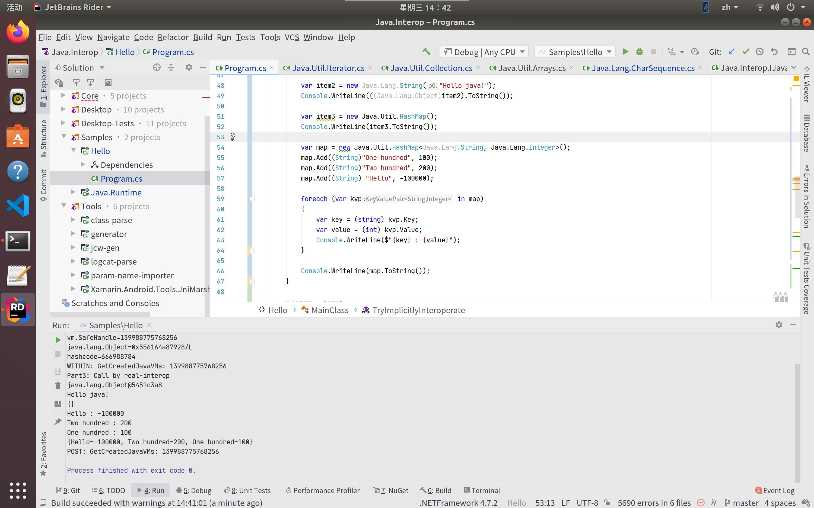

May 7, 2020 由 小羊
原本以为会比较容易跑起来demo，但其实还是我太单纯了。
那么今天来介绍一下单纯的在C#中调用Java代码段的一些解读。这样，意味着我们在本文中会直接调用Java的类，而不会在C#中进行继承、重写等。
此时需要考虑用到两个工具：class-parse和generator。
class-parse通过读取jar包字节码，推导出每个类的public、protected方法、字段，并以XML的格式输出。此工具基本上没有太大问题，可以直接使用；当然了，你不会在C#里用java的Stream API吧，所以可以考虑改一下源码来手动去掉stream api。
generator通过读取上述工具生成的XML和部分引用程序集来生成对应的.cs文件。这个工具似乎官方的进度还不够快，有很多老旧的类名称、方法都没有修改（例如JNIEnv、RegisterAttribute、JniHandleOwnership等）需要魔改后才能正式用起来。https://github.com/yang-er/java-interop 这里提供了我自己魔改的结果，不保证运行正确性、与最终发布时的设计的一致性啊~
上述程序运行完了以后，你会获得一个一串.cs文件，然后编译之后就可以在你的C#程序里运行了。注意由于截止目前还没有支持coreclr，请使用TargetFramework = net472编译，并在linux/macos上用mono运行。另外直接根据rt.jar编译出来的文件需要进行一些修改（例如让Java.Lang.Object继承于Java.Interop.JavaObject，让Java.Lang.Throwable继承于Java.Interop.JavaException）

generator将对应类的字段、函数，生成对应的JNI调用代码，C#运行时调用这个函数就会通过JNI访问Java的对应功能。
每个函数都会翻译出来四个部分：
jvalue*数组，然后通过JniPeerMember缓存的方法信息进行调用。普通的字段会被生成成为具有getter和setter的属性
具有getXXX()，setXXX(value)的一对函数也会被翻译成属性
Listener、Observer之类的东西则会被翻译成事件、EventArgs等
抽象类、接口会生成对应的Invoker，如果C#中没有注册返回对象实际对应类型，则会使用这些Invoker来提供一个假的C#实现，否则哪来的类来调用Java方法呢（雾）
是否有必要将get和set对翻译成属性？我个人的观点是：只翻译成对应的函数，然后提供一个属性来访问对应函数。显然这些get和set也可能被virtual override，而重写属性的话代码就会长得比较丑了。
另外对有些类型的返回处理是否有必要？例如java.lang.String和System.String之间是否有必要每次调用都转换？数组直接返回JavaArray
目前与Xamarin.Android一个很大的变化是，他们决定废弃JNIEnv这个不伦不类的类，改为使用JniEnvironment这个进行良好的整理的类。所以类的生成内容都有变化。原来的JniEnv中提供了直接对IntPtr操作的类，现在由JniObjectReference提供对应的方法来复制，整理的更加“干净”。
在Xamarin团队决定将互操作支持带到桌面上的时候，他们一开始使用了SafeHandle来代替原来的IntPtr，但是发现性能下降明显，所以后期他们全部改成了JniObjectReference。目前的generator大部分还都返回IntPtr+JniHandleOwnership，你需要改成ref JniObjectReference+JniObjectReferenceOptions。
除此之外，与初代实现的不同一点是，
显然Java中，Throwable是继承于Object的，但是如果想在C#中强类型处理Java异常，Throwable就不能再继承于Object了，除非之后CLR规范修改（雾）
另外目前的Generator生成出来的并没有泛型，全部都是平铺直叙的类。如果想支持C#那样的泛型，需要后期他们继续增加支持，目前你需要自己写一些胶水代码（继承、重写、cast）来“支持”。
另外Java还支持重写某函数以后返回比父类更具体的子类类型，这一点C#是不支持的，所以你可能需要修改生成的胶水代码才能编译。
这套框架走JNI，所以其实性能其实不会太差？但是需要注意的是，这套框架目前翻译Java数组、CharSequence的时候，会有Java数组内容复制到C#数组，和C#数组内容复制到Java数组里，这两个过程，你需要非常小心，尽量在胶水中少使用数组，多使用ArrayList等。
我怎么总觉得按他们的速度，这个功能会跳票啊？（大雾）